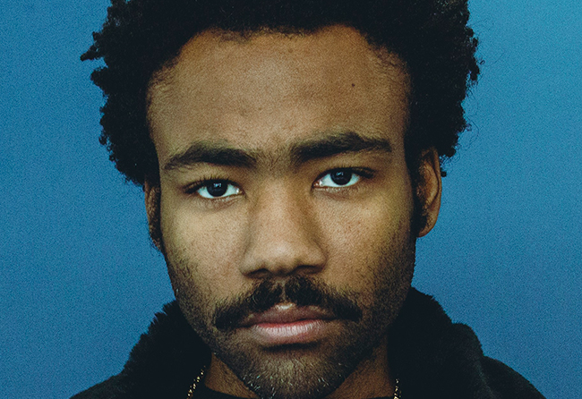
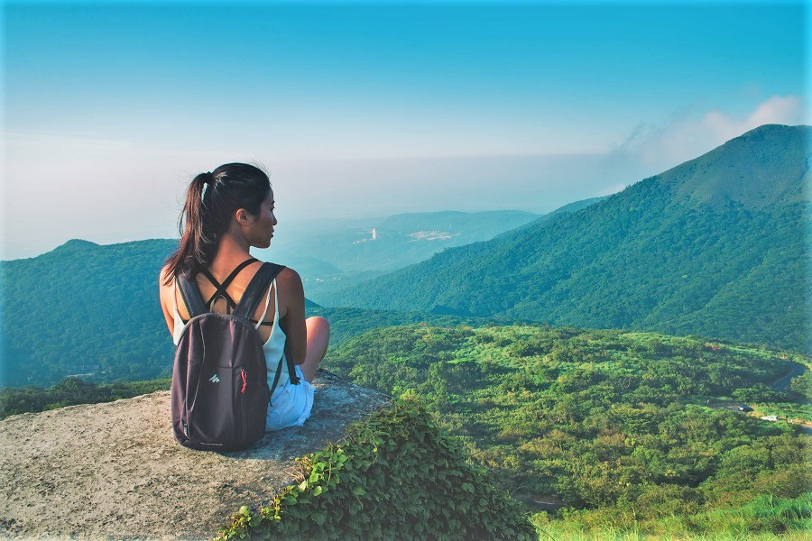
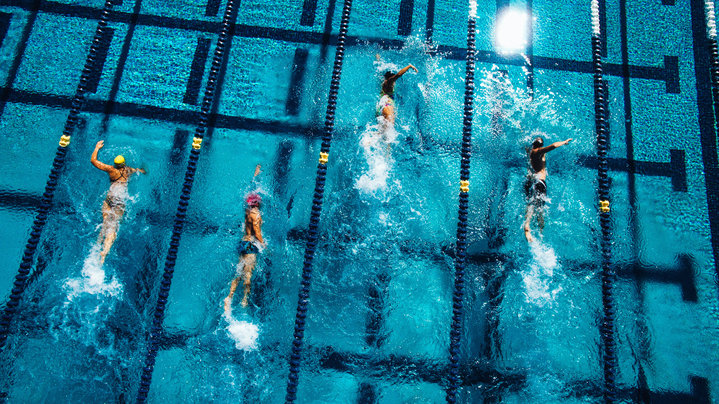

Hi! My name is Cindy and I am a current sophomore at the University of Michigan. I was born in New York and raised in Novi, MI. I have one older sister named Carmen, who also studies at U of M. I am studying information and psychology. Since I was a kid, I've had an interest in technology and would always be triyng to figure out what each button and mechanism's function was.
Besides technology, some of my other hobbies include listening to music, traveling, and swimming. Some of my favorite artists include Childish Gambino, Chelsea Cutler, Ariana Grande, and Khalid. I am not particular about what genre of music I listen to; anything is fine as long as it sounds nice.
Traveling is important to me because it's an invaluable chance to learn about the world's incredible diversity. It is also a great opportunity to gain insight on yourself and learn to be independent. I also love learning about other cultures and talking to locals. I am very fortunate to have had the chance to go abroad this summer and experience India and Chile.
Having been a competitive swimmer since I was a kid, swimming is an indispensable part of my life. While I no longer train with a team anymore, I do try to visit the pool at least twice a week. I find swimming lap after lap really helps to clear my mind and make me relax. While others may dislike going to the pool because they find swimming endless laps to be incredibly boring, I really enjoy the feeling of being engulfed by a body of water.